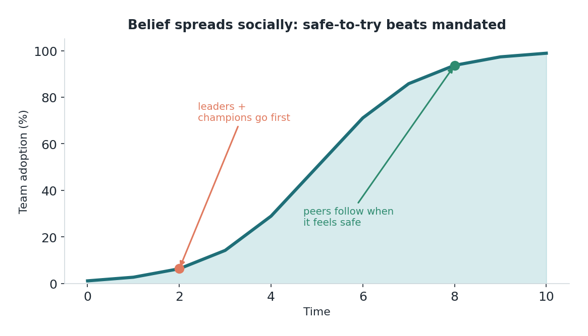

Edisi 11 — Awareness & Belief: bagaimana perubahan sebenarnya dimulai
Ada satu hal yang saya pelajari pelan-pelan: kamu bisa menciptakan awareness dengan memo, tapi kamu nggak bisa menciptakan belief dengan itu. Awareness itu "saya tahu kita lagi ngerjain hal AI ini." Belief itu "saya beneran pikir ini bisa membantu saya, dan aman buat dicoba." Itu dua keadaan yang beda, dan celah di antara keduanya itulah tempat kebanyakan perubahan diam-diam mati. Sebuah tim bisa sepenuhnya sadar soal tool baru dan sama sekali nggak tergerak olehnya. Bergerak dari sadar ke percaya itulah kerja sebenarnya di tahap-tahap awal ini.
Dan belief nggak menyebar dari atas ke bawah; dia menyebar ke samping. Orang nggak jadi percaya karena leadership mengumumkan sesuatu. Mereka jadi percaya waktu mereka lihat rekan yang mereka hormati mencoba tool-nya, selamat, dan diam-diam jadi lebih jago di pekerjaannya. Itu kenapa champion jauh lebih penting daripada mandat. Satu rekan yang dipercaya bilang "saya coba ini dan beneran menghemat satu jam saya" menggerakkan lebih banyak belief daripada sepuluh email dari leadership.
Tapi — dan ini bagian yang kadang dilewatkan leader — belief cuma menyebar kalau leader jalan duluan. Bukan lewat perintah, lewat contoh. Kalau saya minta tim mencoba sesuatu yang baru dan asing, dan saya sendiri belum pernah menyentuhnya, permintaan itu jadi hampa. Waktu orang lihat leader-nya kesulitan sama tool yang sama, belajar secara terbuka, jadi pemula yang keliatan, itu melakukan dua hal: bikin tool-nya kerasa aman, dan bikin jadi pemula kerasa terhormat. Leader adopsi duluan bukan buat keliatan ahli, tapi buat bikin nggak-ahli itu jadi hal yang wajar.
Jadi urutan yang beneran berhasil itu manusiawi, bukan mekanis. Leader coba secara terbuka dan berbagi apa yang mereka pelajari. Beberapa champion awal — sering kali bukan orang paling senior, cuma yang paling penasaran dan dipercaya — mengambilnya dan cerita jujur soal pengalaman mereka. Rekan-rekan mereka menyaksikan, merasa aman, dan ikut masuk. Belief menyebar kayak kehangatan di dalam ruangan, dari orang ke orang, sampai suatu hari itu cuma jadi cara tim itu bekerja. Kamu nggak bisa mempercepatnya dengan urgensi; kamu cuma bisa merawatnya.

Saya mau menyebut kebenaran emosional di balik semua ini, karena ini rapuh. Mencoba sesuatu yang baru di depan rekan kerja itu bikin kamu terbuka dan rentan. Orang khawatir keliatan lambat, konyol, atau bisa digantikan. Seluruh inti dari leader-duluan-lalu-champion itu adalah bikin keterbukaan itu aman — buktikan lewat contoh, bahwa jadi pemula di sini itu normal dan nggak apa-apa. Waktu risetnya bilang tim dengan trust rendah jauh lebih cemas, ini-lah obatnya: bukan lebih banyak informasi, tapi lebih banyak contoh manusiawi yang keliatan dan aman soal mencoba dan belajar.
Jadi kalau kamu seorang manajer yang lagi baca ini, tugasnya lembut tapi nyata: jadilah yang pertama mencoba, jujur soal kesulitannya, lalu temukan dan rayakan champion-mu. Dan kalau kamu bukan manajer, kamu mungkin champion tanpa gelar itu — orang yang "saya coba ini" jujurnya bikin aman buat semua orang di sekitarmu. Belief itu dibangun oleh orang-orang kayak gitu, satu cerita jujur pada satu waktu.
Sumber
- Playbook A-ke-E (Awareness→Belief); leader adopsi duluan, champion bikin ini aman; tim dengan trust rendah ~1,5x lebih cemas — McKinsey (7 Agustus 2026).